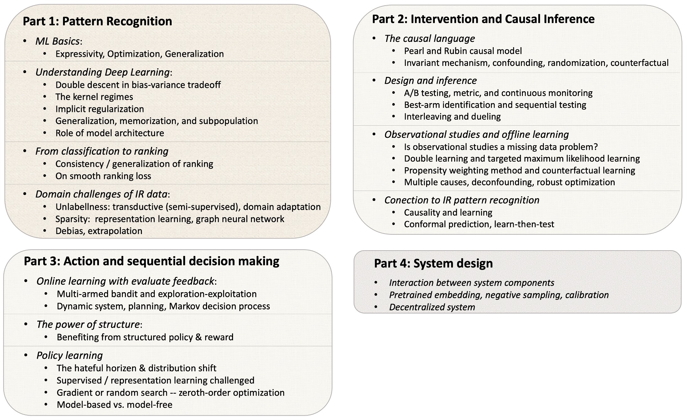

Theoretical Foundation for Modern Information Retrieval System
(KDD 2022 Tutorial, Washington DC)
In the past decade, deep learning has significantly reshaped the landscape of information retrieval (IR). The community has recently begun to notice the potential dangers of overusing less-understood mechanisms and over-simplified assumptions to learn patterns and make decisions.
In particular, there is growing concerns on the interpretation, reliability, social impact, and long-term utility of real-world IR systems. Therefore, it has become a pressing issue to bring the IR community comprehensive and systematic tools to understand empirical domain solutions and motivate principled design ideas. Our tutorial will cover a borad range of topics as below:
The complete tutorial slides can be found here. The additional online material that discusses representation learning and graph neural network for addressing the sparisity issue will be uploaded shortly.
About Speaker

Da Xu
Machine Learning Manger
Search & Recommendation, Walmart Labs
Da Xu is a Machine Learning Manager and Staff Machine Learning Engineer at the Search & Recommendation team in Walmart Labs. After joining Walmart Labs from UC Berkeley in 2018, Da has been driving research and realworld productions that push the frontier of modern IR systems. In the past several years, his research works that invent theoretical tools for modern IR systems have been published in major ML/AI conferences, including NeurIPS, ICML, ICLR, AAAI. His industrial and application work has been published in such as KDD, WSDM, WWW.
Da is now leading a team of research scientists and ML engineers that renovates the IR system of Walmart.com. His team has filed several patents documenting production innovations. Da’s contribution to the IR community has been long recognized, and he has been invited as the keynote speaker for various events in KDD, ICML, and INFORMS.
Da is also designated by the INFORMS committee as the session chair of Causal Inference Analysis for Information Retrieval for 2021 and 2022. Da is also actively engaged in public services. He organized the WSDM Workshop on Decision Making for Information Retrieval Analysis. He is also actively serving as reviewers and PC for such as NeurIPS, ICML, ICLR, KDD, SIGIR, WWW. Recently, Da begin to serve as editor for ACM Transactions on Recommendation Systems.
Content
The complete tutorial slides: full tutorial slides .
| Time | Content | Slides |
|---|---|---|
| 1.5 hr | Pattern Recognition, Deep Learning, IR Domain Challenges and Solutions | Part1 Slides |
| 1 hr | Intervention and Causal Inference Analysis | Part2 Slides |
| 0.5 hr | Action and Sequential Decision Making | Part3 Slides |
| 0.5 hr | Topics on IR System Design | Part4 Slides |
Logistics
Tutorial Date and Location:
The tutorial is held on 1:00 pm - 5:00 pm (ET) Aug 14, 2022 , at hall 207B of Washington DC Convention Center.
Attendence and Registration:
All onsite attendees must be registered. Please refer to the KDD 2022 main conference website for more information regarding the registration. The tutorial will be recorded and uploaded to the conference website as well.
Please contact daxu5180 at gmail.com for questions.